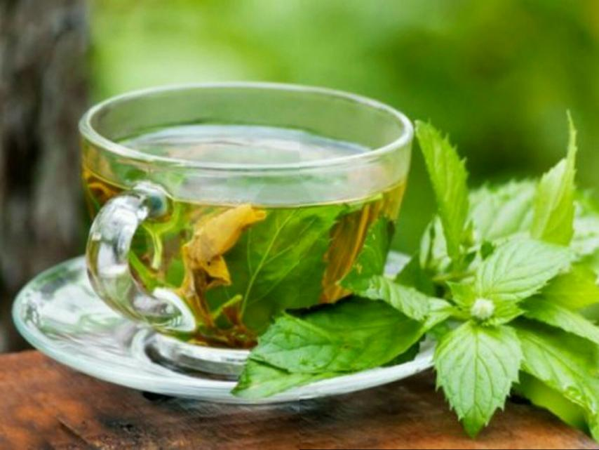
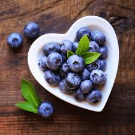
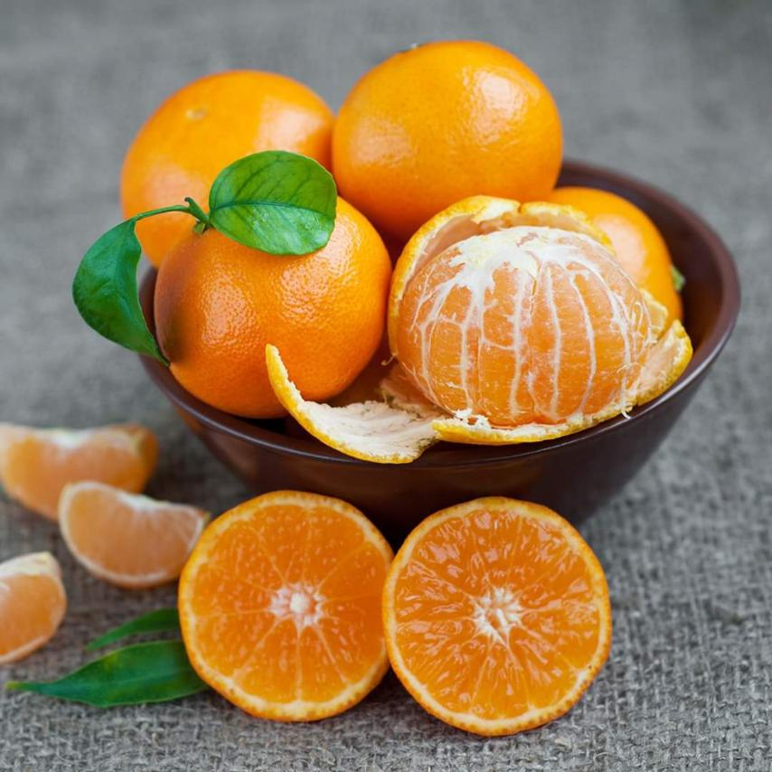
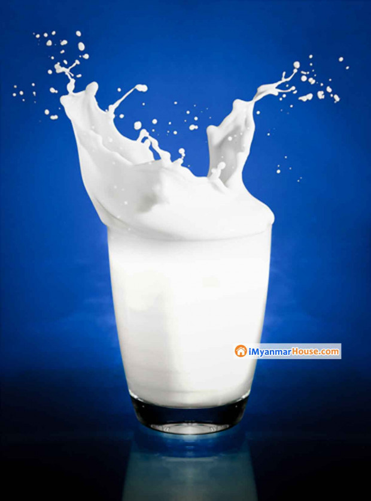
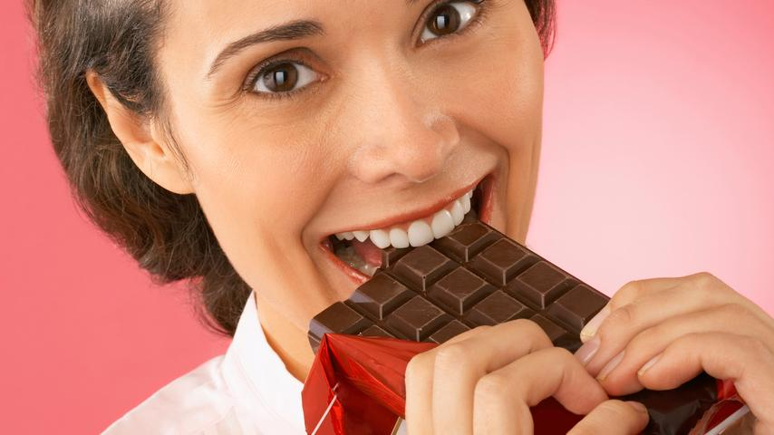
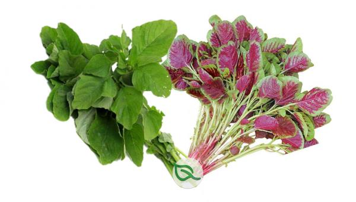
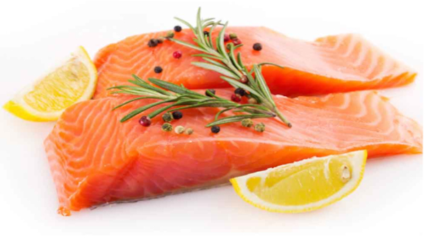
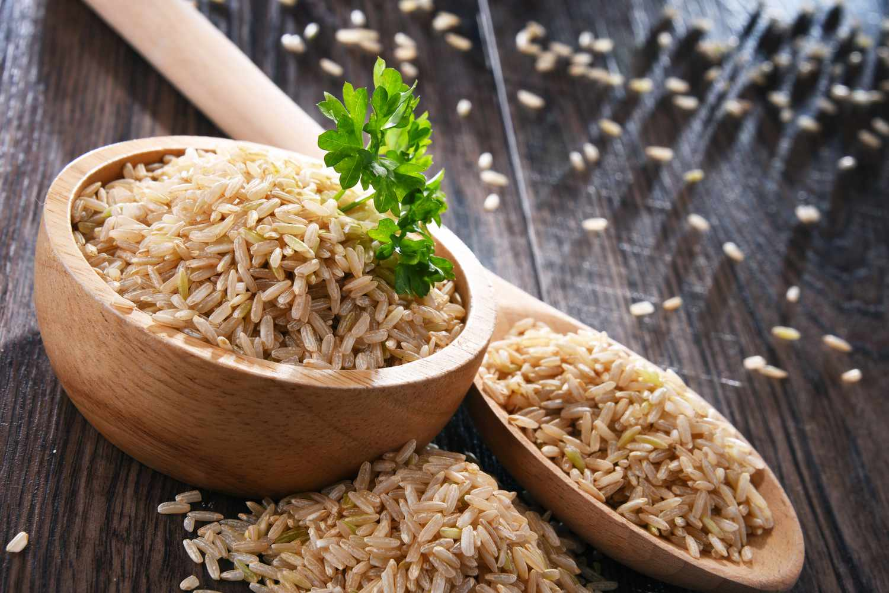
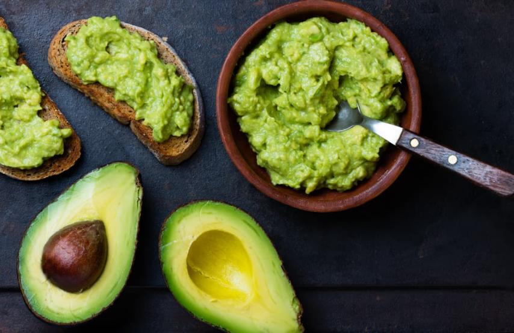

Stress can cause physical and mental fatigue. Rapid heart rate, high blood pressure, and anxiety can occur. For example, consider diet. Some foods make stress worse and some foods reduce. Foods that can reduce stress and reduce stress and anxiety and fight depression include green tea, blueberries,oranges,milk,almonds,dark chocolate, spinach, salmon,brown rice and avocados.









